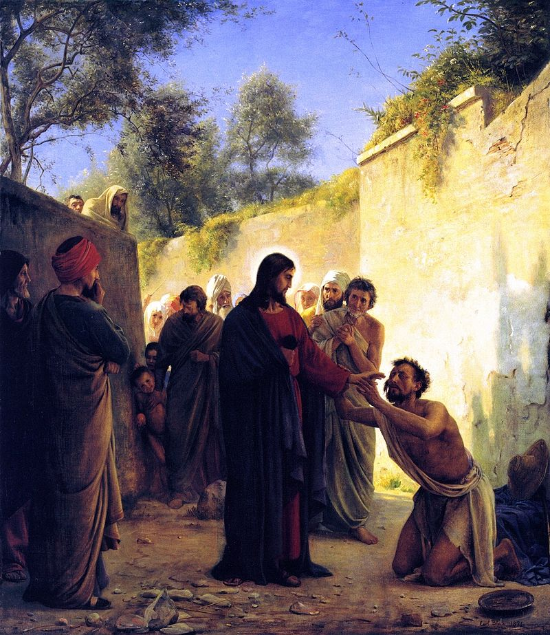

重生的必要性

重生

复习
- 重生的定义： 1. 从上帝（灵）所生 2. 重新的被创造（palin-genesia) 3. 在罪中死，在基督里活
- 重生不是取决于人的努力.
- 重生完完全全是上帝的作为，是上帝的特殊恩典。
主要经文
约翰福音9章1-41节
- 约翰福音第9章讲述了耶稣治愈了一个生来就是瞎子的人的奇迹。
- 耶稣用泥土和唾液抹在瞎子的眼睛上，然后吩咐他去洗净。瞎子行了这事就得以看见了。
- 耶稣在安息日治病被认为是违反犹太法律。法利赛人质疑这个奇迹，并对瞎子和他的家人进行审问。
- 瞎子坚定地为耶稣辩护，称他为神的使者。并被赶出会堂。